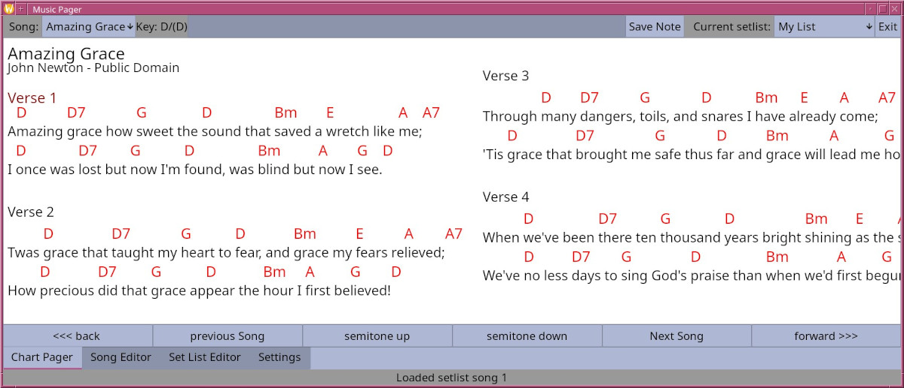

This is the page that will most be used during a performance. It displays the chart and pages through the song and the set list.
The buttons along the bottom can be used to:
All of the navigation buttons can be set up to respond to a hot key or midi event or both on the settings page.
Most USB pedals (or bluetooth pedals) send key press events that will work with this. See the settings page for more details.